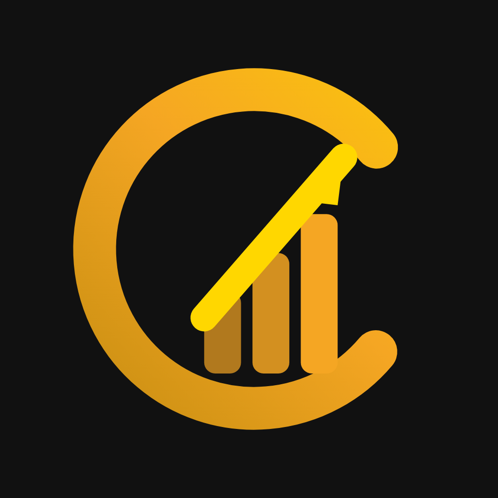

ControlFin
App de finanças pessoais em Flutter + Firebase · Android e Web
Reúne num só lugar o controle do mês e o planejamento dos investimentos. O usuário registra ganhos e gastos (à mão, importando a fatura do cartão ou a partir das notificações do banco), acompanha as metas do orçamento e recebe uma orientação clara de como dividir o próximo salário entre a reserva de emergência e a carteira de investimentos.
- 155testes automatizados
- 2plataformas: Android e Web
- 0chaves de API dentro do app
Orçamento do mês
Lançamentos únicos, mensais ou parcelados, metas no estilo 50/30/20, categorização automática e reserva de emergência calculada pelos gastos essenciais.
Cartões e faturas
Importação de faturas em PDF ou CSV, com identificação do banco, do cartão, do vencimento e das parcelas, conferência do total e detecção de duplicados.
Notificações dos bancos
Leitor nativo em Kotlin (MethodChannel) que transforma notificações em lançamentos. O texto original nunca sai do celular.
Investimentos
Perfil de investidor, carteira-alvo por otimização de média-variância (Markowitz) e preço justo de ações pelos modelos de Graham e Gordon.
Arquitetura
- Sem backend próprio: Firebase Auth e Firestore, com regras de segurança que isolam os dados de cada usuário.
- Robô em Dart puro no GitHub Actions coleta dados de mercado (BCB, B3 e outras fontes) e grava no Firestore. Assim o app não guarda nenhuma chave de API.
- Otimização da carteira roda em um isolate separado (
compute) para não travar a interface.